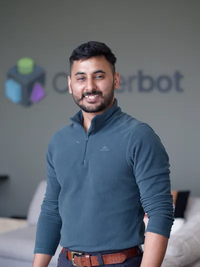
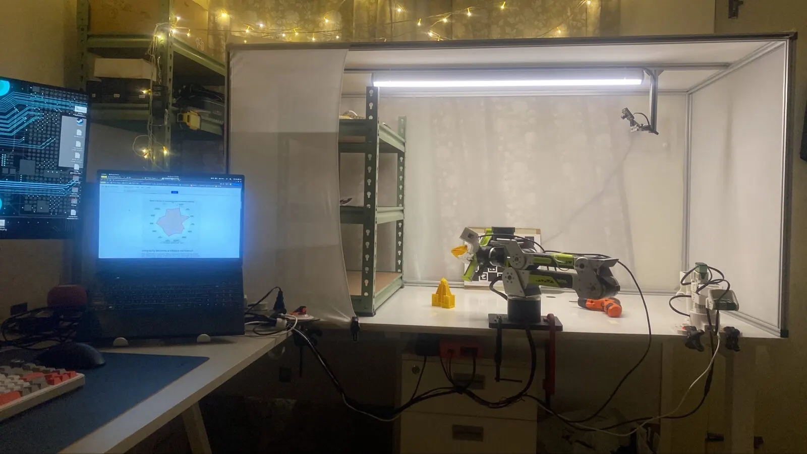
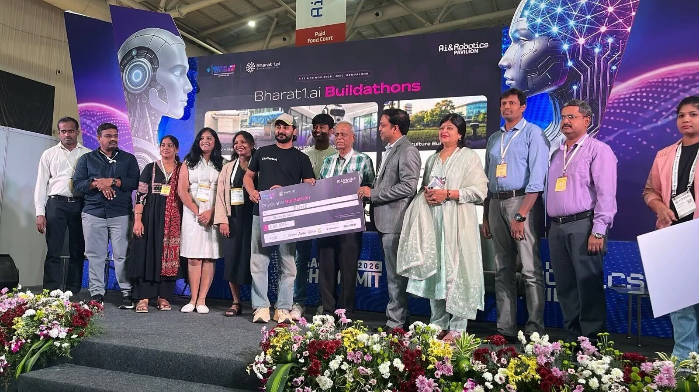
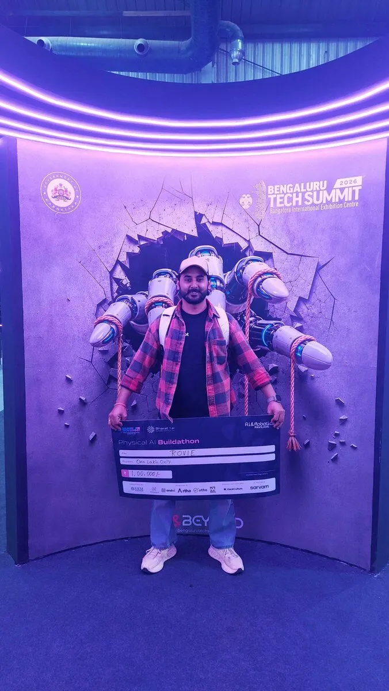

Does this count?
Nov 22, 2026 · View on X ↗“Turns out if you build a robotics lab at home, like moths drawn to fire, you’ll end up with robotics researchers flying in from all over the world to squat in your house.”
— @keerthanpg
Manipulation Lead at Clutterbot · Building the hybrid manipulation stack combining VLAs and classical motion control. Six years from AMRs, sortation systems to indoor dexterous robots for messy, unstructured environments.

Over the past six years, I've worked across the full stack of robotics systems — from low-level hardware control to high-level behavior and manipulation. From classical controlles to VLAs and RL policies. I started my journey working on autonomous mobile robots, focusing on navigation, control, and large-scale deployments internationally.
More recently, my work has centered around robot manipulation — designing and building hybrid systems that can handle messy environments but still work reliably.
At Clutterbot, I've been leading the development of the whole VLA pipeline for our robot including teleoperation rigs, data curation, RL finetuning and inference pipelines. A big part of my work involves doing extensive research and bridging gaps — between software, hardware, research and product. Large part of my time goes in reading latest papers and blogs to stay up to date on what is happening in the field. What excites me most is the possibility of what robots can achieve given all monumental interest from everyone in the field today.

Nov 22, 2026 · View on X ↗“Turns out if you build a robotics lab at home, like moths drawn to fire, you’ll end up with robotics researchers flying in from all over the world to squat in your house.”
— @keerthanpg


Yaaay money to buy more hardware. Robotics hackathon at @blrtechsummit
Nov 21, 2026 · View on X ↗Got this @seeedstudio reBot-DM arm working over the weekend. My fingers hurt after screwing 100s of M3s but the chocolate in the end was worth it. Now I understand why they have a $250 difference between assembled and un-assembled versions.
Nov 2, 2026 · View on X ↗Endlessly fascinated by low-level systems and the physical realities of robotics. I've spent a lot of time with real hardware and built an intuition for it — I'm the go-to person for hardware validation from a software and controls perspective. I like pushing the limits of what I'm working with, and sometimes end up breaking things.
I read technical blogs and stay current with what's happening in robotics. Sometimes I get overwhelmed trying to see where I stand relative to the people pushing the boundaries of the field.
One person can do a lot, but give them a good team and the effect multiplies. Working alone is easy and comfortable — building a high-performing team and real relationships with the people on it is what actually raises throughput.
of audiobooks since January 2021 — roughly 31 days of non-stop audio.
| Month | Hours |
|---|---|
| August | about 28 |
| September | about 16 |
| October | about 28 |
| November (to date) | 20 h 4 min |
When I'm not around robots, I'm usually on a trail somewhere — mountains, coastlines and the occasional city in between.
Open to conversations about robotics, embodied AI, and interesting hard problems. Best reached by email.